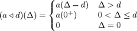

Part 4: Using the Java API
Contents
Introduction
The RTC Toolbox internally consists of two major software components: a kernel that is implemented in Java, and a set of MATLAB libraries that connect the Java kernel to the MATLAB command line interface.
For most users, the MATLAB libraries will provide enough functionality. However, sometimes it may be required or it may be more convenient to access the Java API directly.
This tutorial presents a small case study that demonstrates how the Java API can be accessed from within MATLAB.
E. Wandeler. Modular Performance Analysis and Interface-Based Design for Embedded Real-Time Systems. PhD thesis, ETH Zurich, September 2006.
Implementing a New Operator
Suppose we want to implement the following new operator:

The rtcaffine function is very similar to this operator:
a = rtcbdu(5,2); d = 3; b = rtcaffine(a, 1, d); rtcplot(a, 'r', b, 'g', 20);
However, used as above with a scaling factor 1, the rtcaffine function implements the following operation:
As we see, we need to determine the value of a at x=0+ in order to implement our new operator.
When we consult the Java API documentation, we find a method of the class curve, that is called y0epsilon(), and that returns the value of a curve at x=0+.
We will now use this method, to build our new operator.
Using the Java API
To make the Java API accessible from within MATLAB, we must first import the API with the following code:
import ch.ethz.rtc.kernel.*;
Then we can access all methods of the API, and since a is a curve and thus an instance of the class curve, we can access the methods y0epsilon() of the curve instance a:
a0 = a.y0epsilon();
Next, we move the curve with the rtcaffine function:
b = rtcaffine(a, 1, d);
And finally, we take the maximum of the moved curve, and the constant curve with y=a0:
b = rtcmax(b, a0); rtcplot(a, 'r', b, 'g', 20);
Getting and Using Curve Data
In order to implement new operators in Matlab, one may need access to the curve representation. To this end, the Java API defines several access functions. For example, let is first define a curve f and plot it:
f = rtccurve([[0 3 2]], [[0 0 1];[2 2 0.25]], 3, 10, 5, 4); rtcplot(f, 20);
The curve f is of class ch.ethz.rtc.kernel.Curve; we can have a look at some of the internals by tying f, but in order to actually access the necessary data, we need special access functions. The function rtcexport exports a curve or a curve set to a string representation, that can directly be used in Matlab to create a new curve with the same data. Using the Matlab function eval, the string can be converted to a curve again:
rtcexport(f)
ans = rtccurve([[0.0 3.0 2.0]], [[0.0 0.0 1.0];[2.0 2.0 0.25]], 3.0, 10.0, 5, 4.0)
g = eval(rtcexport(f))
g =
Curve:
AperiodicPart = {(0.0,3.0,2.0)}
PeriodicPart = {(0.0,0.0,1.0)(2.0,2.0,0.25)}
(px0,py0) = (3.0,10.0)
(pdx,pdy,pds) = (5.0,4.0,0.8)
(pyMin,pyMax) = (0.0,2.75)
In order to access the individual fields of a curve, we can either decompose the string obtained by rtcexport or otherwise, we may make use of some Java API functions. Let us suppose, that f is a curve, then the following functions can be used:
- f.hasAperiodicPart: Returns true if this curve has an aperiodic part.
- f.hasPeriodicPart: Returns true if this curve has a periodic part.
- f.isConstant Returns true, if this Curve represents a constant.
- f.aperiodicSegments.toMatlabString: Returns the aperiodic segments of this curve as an array. The elements (i,1) and (i,2) denote the x-value and y-value of the start point of segement i, respectively, and (i,3) denotes its slope. This function only works correctly, if the curve actually has an aperiodic segment!
- f.periodicSegments.toMatlabString: Returns the periodic segments of this curve as an array. The elements (i,1) and (i,2) denote the x-value and y-value of the start point of segement i, respectively, and (i,3) denotes its slope. This function only works correctly, if the curve actually has an periodic segment!
- f.pdx, f.pdy: Return the delta on the x- and y-axis between two consecutive repetitions of the periodic part. f.pdx is also called period and can be obtained by f.period. It has to be a positive integer!
- f.pds: Returns the overall slope of the periodic part pds = pdy / pdx.
- f.px0, f.py0: Return the x- and y-coordinates where the periodic part of this curve starts.
- f.y0epsilon: Returns the y-value of this curve at x = 0 + epsilon.
- f.pyMax, f.pyMin: Returns the maximum and minimum y-values of the periodic part within x = [0,pdx] in the relative coordinate system with origin (px0/py0).
For example, we have (see also the plot of the curve f):
eval(f.aperiodicSegments.toMatlabString)
ans =
0 3 2
eval(f.periodicSegments.toMatlabString)
ans =
0 0 1.0000
2.0000 2.0000 0.2500
[f.px0 f.py0 f.pdx f.pdy]
ans =
3 10 5 4